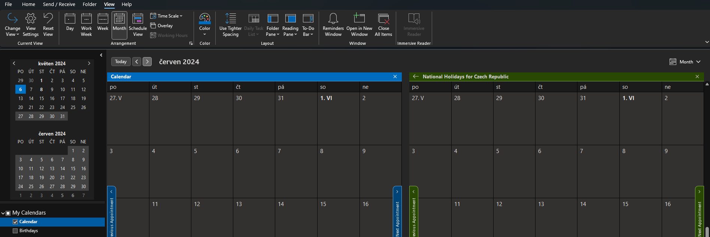

🗂️ Outlook – Praktický průvodce kalendářem & tipy
🚀 Modernà přehled funkcà zobrazenà kalendáře, sloučenà panelů a doporučenà pro práci v Outlooku.
📖 Zobrazenà kalendáře
🔄 SloučenÃ/Oddělenà panelů kalendáře
View ➡ Overlay
Umožňuje zobrazit vÃce kalendářů v jednom okně nebo odděleně.🗂️ Oddělené zobrazenà kalendářů
Každý kalendář se zobrazà v samostatném okně. 🔗 Sloučené zobrazenà kalendářů
Všechny kalendáře se zobrazà v jednom okně.